Core · Video walkthrough
Review customer invoicing settings and department billing
Inspect billing identity, rate-card and customer defaults, read the empty aging/account views, and distinguish customer invoicing from the department’s subscription without creating or changing financial records.
Before you begin
- Use a fictional practice department and an account already authorized for the available invoicing and subscription views.
- Use an existing fictional company contact and preserve all settings, customer profiles, rates, invoices, payment connections and subscription choices.
- Treat organization registrations, addresses and financial preferences as information that must be verified before a later authorized save.
Chapters
- Orient to customer invoicing
- Inspect the department’s billing identity
- Read registrations and document-link preferences
- Distinguish rate definitions from saved charges
- Inspect the existing customer’s Billing section
- Read customer terms and rate preferences
- Review address source and tax fields deliberately
- Interpret the aging view’s actual scope
- Separate the Resgrid subscription from customer invoices
- Finish at the unchanged invoice list
- Apply a bounded billing review across sectors
Watch the walkthrough
Step 1
Orient to customer invoicing
Customer invoicing tracks what your department bills to its customers. In our fictional Chicago Fire practice department, the Invoicing page shows Invoices, Rate Cards, Aging and Billing settings. The list is empty, and the balance tiles show zero. Read these as the current account contents, not proof that payments were collected. This walkthrough inspects configuration and account views; we leave New invoice unused and keep all financial data unchanged.

Practice
Identify invoice count, outstanding balance and the Billing settings tab without choosing New invoice.
Step 2
Inspect the department’s billing identity
Choose Billing settings to inspect what invoices say about the department. Billing identity contains Legal business name and the remit-to address, with city, state or province, postal code and country. These fields supply the identity used on invoice documents. They are blank in this exercise. An empty form may be showing initial defaults; it is not evidence that a complete billing identity has been saved. Identify the needed organizational information before planning any later change.
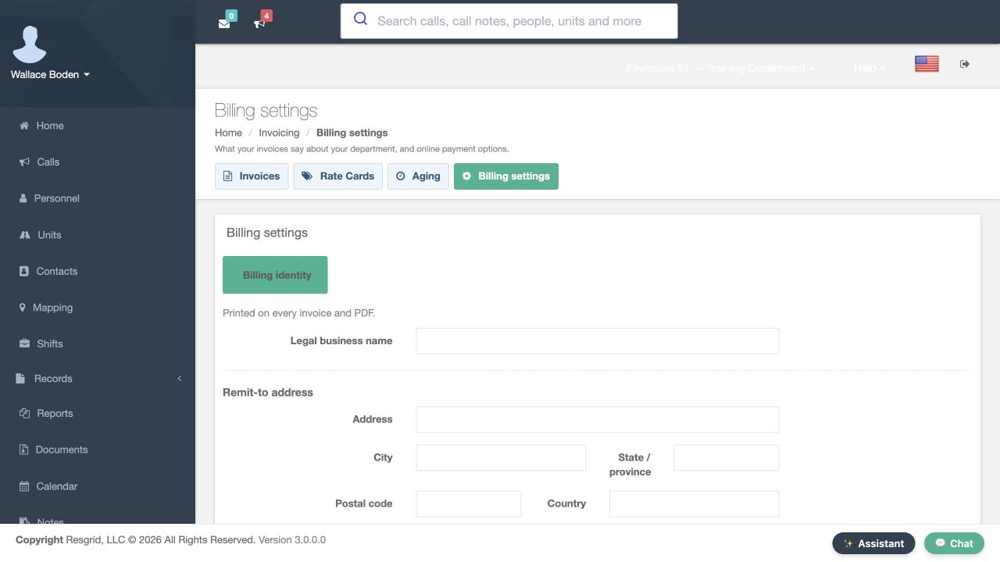
Practice
Find the legal name and remit-to fields and distinguish them from a customer billing profile.
Step 3
Read registrations and document-link preferences
The Registrations section separates tax registrations, SAM UEI, CAGE code and workers’ compensation account information. Each field is empty here. These are distinct organization identifiers, not interchangeable account names. Invoice footer supplies text printed under totals. Below it, Pay link expiry is thirty days and the Show a Pay online link preference is checked. That display preference alone does not establish a usable payment connection or generate a link. We inspect the controls without using Save.
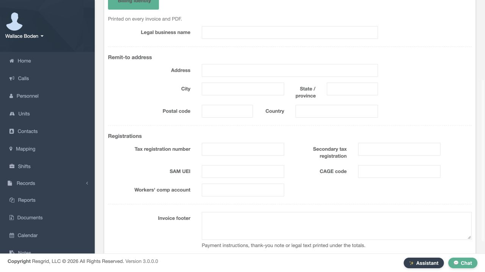
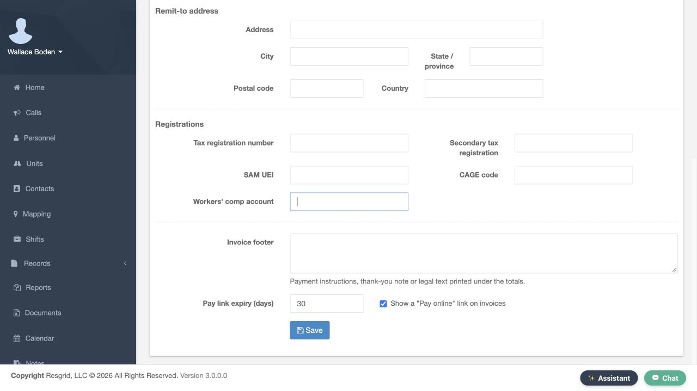
Practice
Read the displayed link expiry and footer controls, leaving every identifier and Save unchanged.
Step 4
Distinguish rate definitions from saved charges
Rate Cards describes the charge schedule: unit or personnel time, flat fees, mileage and materials. A customer can pin a card instead of using the department default. The catalog currently says No rate cards yet. New rate card opens the definition form. Name and Description are blank; Department default is unchecked and Active is checked. The items panel says to save the card before adding items. This is an unsaved form, with no charge items or default card created.
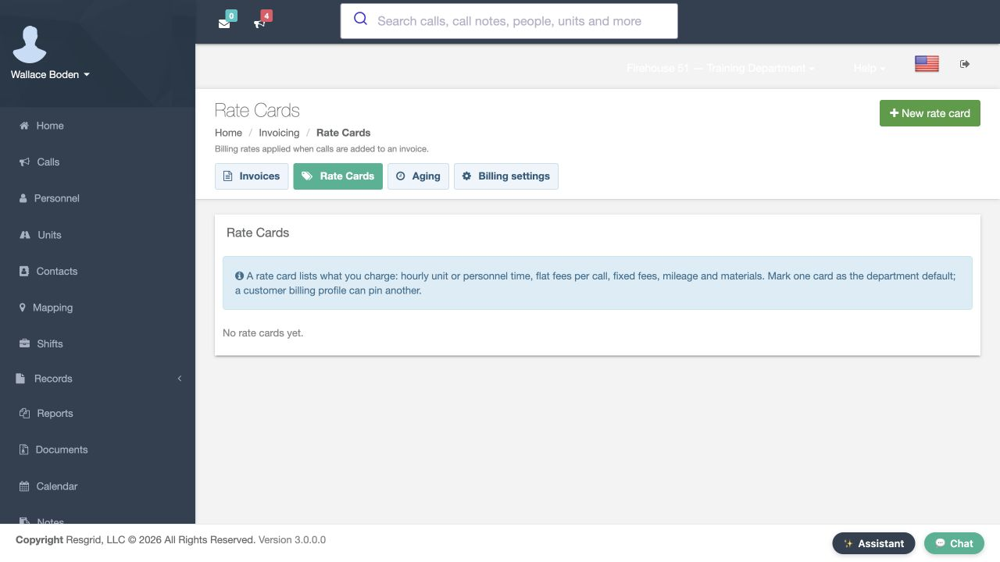
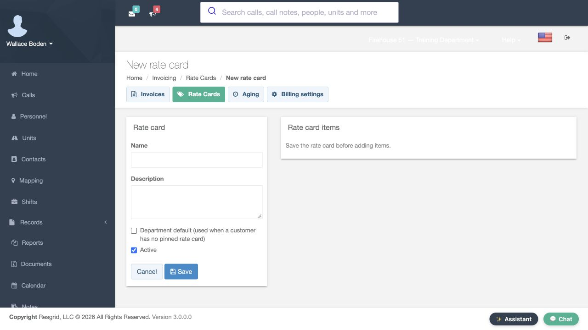
Practice
Open the blank New rate card form, identify the default choice and leave it unsaved.
Step 5
Inspect the existing customer’s Billing section
For customer-specific settings, open Contacts and use View on Academy Logistics Desk, our existing fictional company. Its Billing section says No billing profile yet and No invoices. A directory contact and a billing profile are separate records. Set up billing profile opens a form for that contact; it does not itself save a profile or issue an invoice. Keep that distinction when assessing whether a customer is actually ready for invoicing.
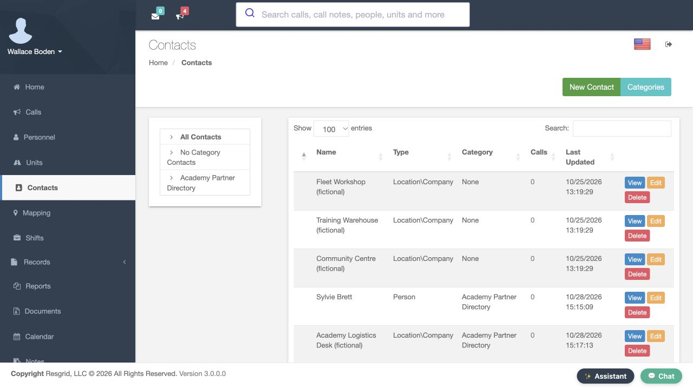
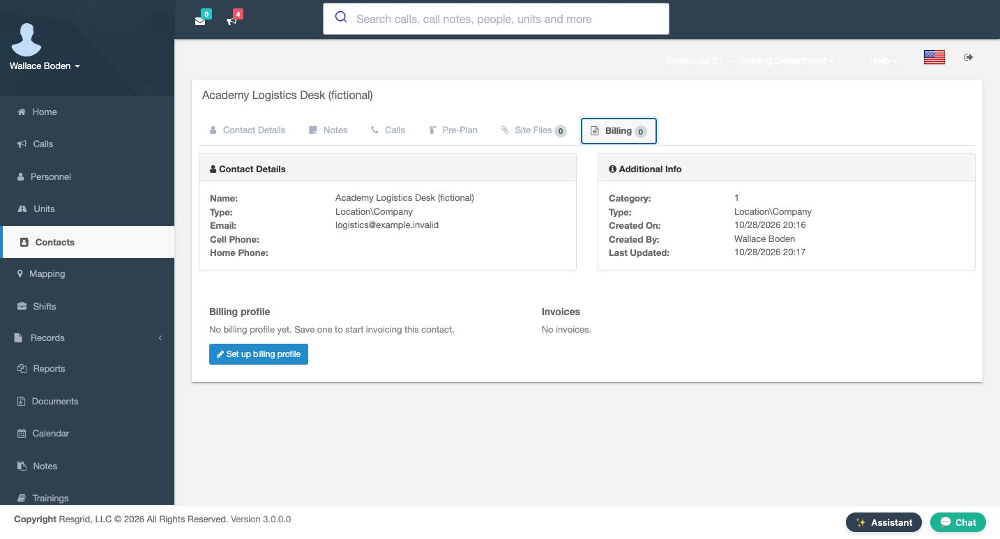
Practice
View Academy Logistics Desk and identify whether it already has a billing profile.
Step 6
Read customer terms and rate preferences
The new customer form shows thirty net days, a blank Default discount, and department-default choices for Rate card and Default rate schedule. Customer terms help set an unset invoice due date when it moves to Sent; contract terms can take precedence. The discount is a default for a new draft. The schedule help concerns contractor bids and deployments when no contract names a schedule. Purchase order required is unchecked and Active is checked. These are unsaved preferences, not completed invoice transactions.
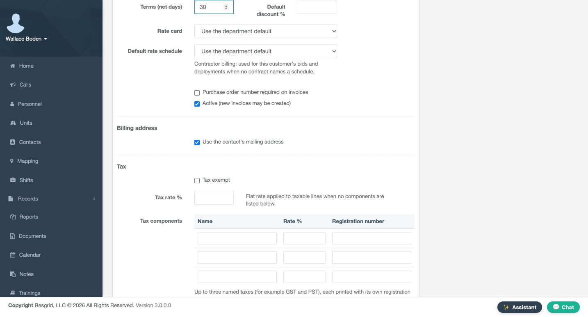
Practice
Identify the thirty-day terms, blank discount and two department-default selections without saving.
Step 7
Review address source and tax fields deliberately
Use the contact’s mailing address is checked. That selects an address source; it does not verify that the directory address is complete. Tax exempt is unchecked, with a blank Tax rate and empty component rows for Name, Rate and Registration number. The form supports up to three named components. Notes, Cancel and Save appear below. Use only organization-approved values in a real billing setup. For this inspection, leave all fields unchanged and do not save a customer profile.
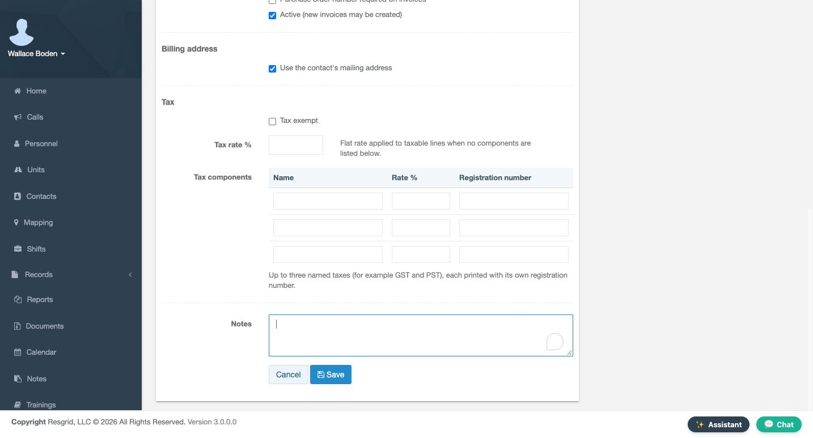
Practice
Identify the address-source checkbox and tax component columns, then leave the profile unsaved.
Step 8
Interpret the aging view’s actual scope
Aging groups positive outstanding balances by how far they are past due. Read Current, one to thirty, thirty-one to sixty, sixty-one to ninety, and ninety-plus days with Total and the displayed as-of time. Here every bucket is zero and the page says No outstanding invoices. That is consistent with the empty invoice account. It does not demonstrate receipt of a payment, a collection action or a customer settlement. Review the underlying invoice before acting on a populated aging result.
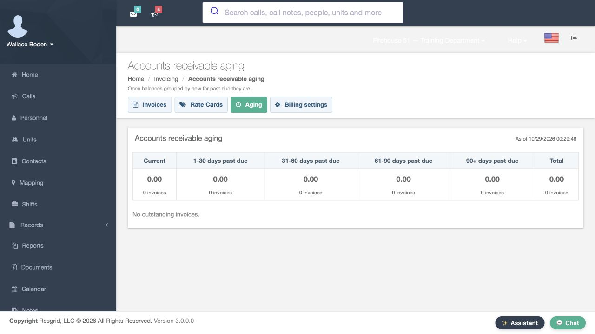
Practice
Read the aging buckets and as-of context without interpreting an empty account as a payment result.
Step 9
Separate the Resgrid subscription from customer invoices
The department menu has a separate Subscription and Billing entry. Use that to review the department’s Resgrid service plan. Subscription Plan and Billing concerns the department’s subscription, not invoices to Academy Logistics Desk. This department displays a Legacy Plan notice. Selecting Entities shows Active Legacy Subscription rather than an entity-selection form. Read the notices that apply to your own department. The example’s displayed legacy amounts and counters should not be used to price another plan or infer its limits. No purchase, cancellation or payment-detail change is part of this review.
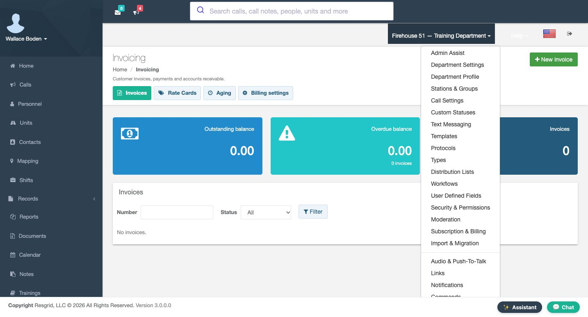
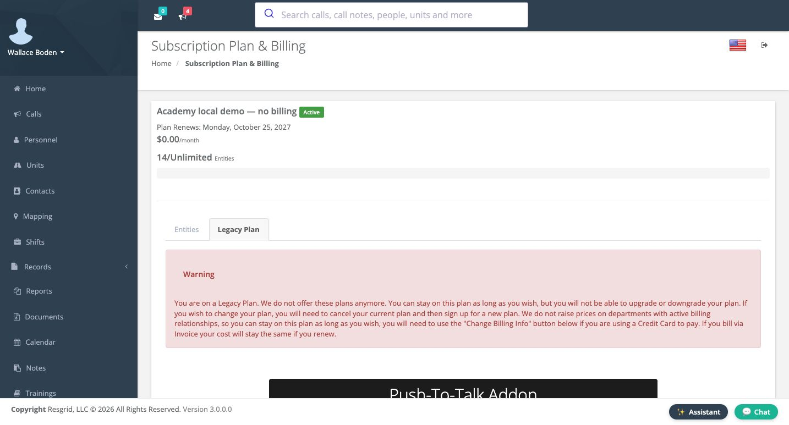
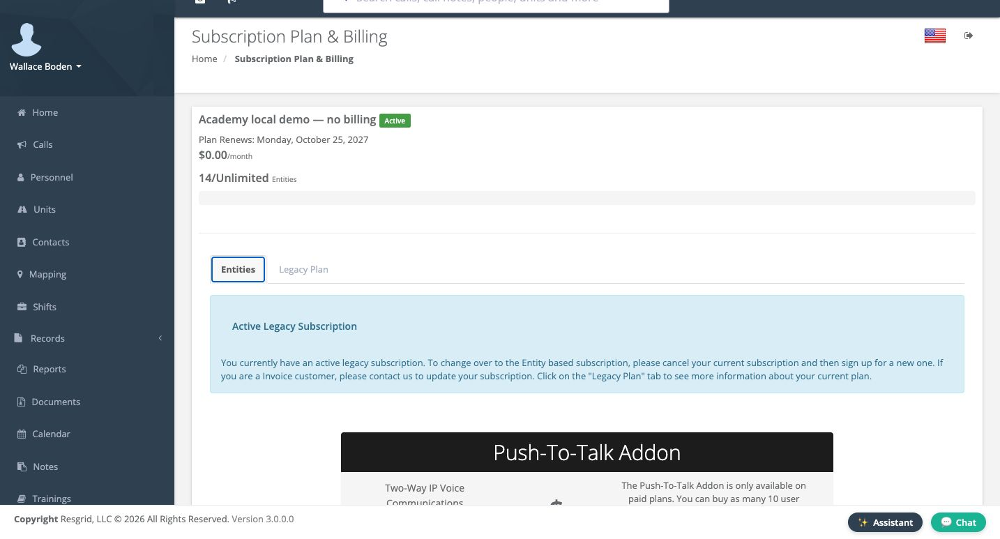
Practice
Follow Subscription & Billing and identify the legacy notice without changing plans or billing details.
Step 10
Finish at the unchanged invoice list
The final Invoicing view still shows no invoices, zero outstanding balance and zero overdue balance. Reviewing an unsaved rate card or customer form has not created an invoice. Keep your review notes specific: which identity fields need confirmation, which customer defaults need a decision, and which subscription notice applies. A form inspected is different from a configuration saved or a financial action completed.
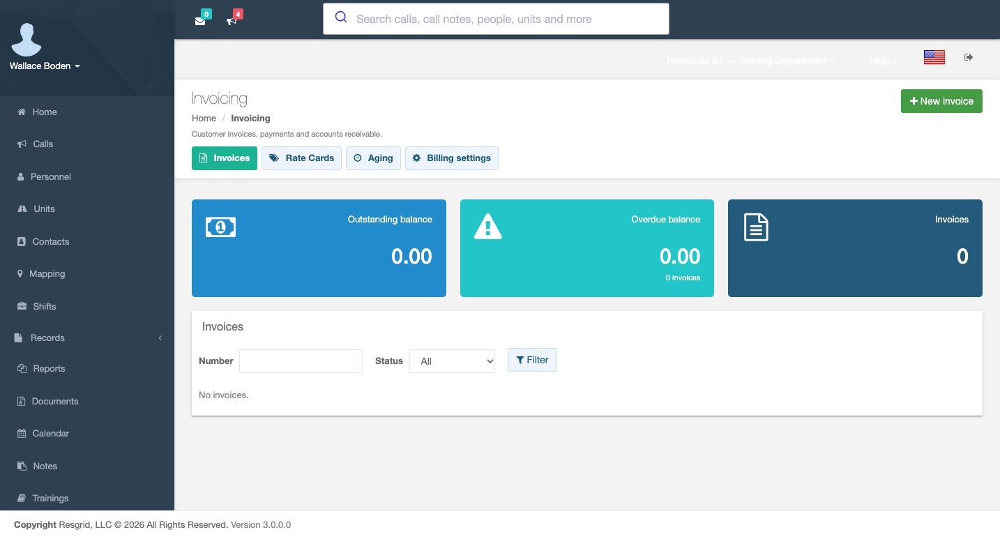
Practice
Return to Invoices and confirm the account is still empty after the configuration review.
Step 11
Apply a bounded billing review across sectors
Chicago Fire can distinguish a training-service customer from its department subscription. Community care and mental-health teams can review an operational partner’s billing setup without putting client histories into Notes. Search-and-rescue coordinators can identify the intended customer for an exercise; security teams can separate a customer-specific rate card from the department default. Wildland teams can review a bounded customer account, and industrial teams can inspect outstanding-balance categories. In all six settings, confirm the organization, customer and account scope before any authorized financial change.
Practice
Choose one sector and identify its customer, invoice identity and account-review question without creating a transaction.
Examples for your department
- Fire / EMS
- Review a fictional training-service customer separately from the department subscription; identify identity and rate decisions without issuing an invoice.
- Community response
- Inspect an operational partner’s billing setup without placing client histories in billing notes or treating software fields as a clinical or legal determination.
- Search and rescue
- Identify the correct fictional exercise customer and billing-profile state before any later authorized invoicing work.
- Security
- Compare the department-default rate concept with a customer-pinned rate card while keeping the account and all amounts unchanged.
- Wildland
- Review an agreed customer account and aging scope without creating financial records or inferring payment from an empty list.
- Industrial
- Inspect department invoice identity and customer account categories, preserving subscription and provider connections.
Transcript
Download transcriptRead the complete transcript
Review customer invoicing settings and department billing Audience: department administrators, authorized billing coordinators Orient to customer invoicing Customer invoicing tracks what your department bills to its customers. In our fictional Chicago Fire practice department, the Invoicing page shows Invoices, Rate Cards, Aging and Billing settings. The list is empty, and the balance tiles show zero. Read these as the current account contents, not proof that payments were collected. This walkthrough inspects configuration and account views; we leave New invoice unused and keep all financial data unchanged. Practice: Identify invoice count, outstanding balance and the Billing settings tab without choosing New invoice. Inspect the department’s billing identity Choose Billing settings to inspect what invoices say about the department. Billing identity contains Legal business name and the remit-to address, with city, state or province, postal code and country. These fields supply the identity used on invoice documents. They are blank in this exercise. An empty form may be showing initial defaults; it is not evidence that a complete billing identity has been saved. Identify the needed organizational information before planning any later change. Practice: Find the legal name and remit-to fields and distinguish them from a customer billing profile. Read registrations and document-link preferences The Registrations section separates tax registrations, SAM UEI, CAGE code and workers’ compensation account information. Each field is empty here. These are distinct organization identifiers, not interchangeable account names. Invoice footer supplies text printed under totals. Below it, Pay link expiry is thirty days and the Show a Pay online link preference is checked. That display preference alone does not establish a usable payment connection or generate a link. We inspect the controls without using Save. Practice: Read the displayed link expiry and footer controls, leaving every identifier and Save unchanged. Distinguish rate definitions from saved charges Rate Cards describes the charge schedule: unit or personnel time, flat fees, mileage and materials. A customer can pin a card instead of using the department default. The catalog currently says No rate cards yet. New rate card opens the definition form. Name and Description are blank; Department default is unchecked and Active is checked. The items panel says to save the card before adding items. This is an unsaved form, with no charge items or default card created. Practice: Open the blank New rate card form, identify the default choice and leave it unsaved. Inspect the existing customer’s Billing section For customer-specific settings, open Contacts and use View on Academy Logistics Desk, our existing fictional company. Its Billing section says No billing profile yet and No invoices. A directory contact and a billing profile are separate records. Set up billing profile opens a form for that contact; it does not itself save a profile or issue an invoice. Keep that distinction when assessing whether a customer is actually ready for invoicing. Practice: View Academy Logistics Desk and identify whether it already has a billing profile. Read customer terms and rate preferences The new customer form shows thirty net days, a blank Default discount, and department-default choices for Rate card and Default rate schedule. Customer terms help set an unset invoice due date when it moves to Sent; contract terms can take precedence. The discount is a default for a new draft. The schedule help concerns contractor bids and deployments when no contract names a schedule. Purchase order required is unchecked and Active is checked. These are unsaved preferences, not completed invoice transactions. Practice: Identify the thirty-day terms, blank discount and two department-default selections without saving. Review address source and tax fields deliberately Use the contact’s mailing address is checked. That selects an address source; it does not verify that the directory address is complete. Tax exempt is unchecked, with a blank Tax rate and empty component rows for Name, Rate and Registration number. The form supports up to three named components. Notes, Cancel and Save appear below. Use only organization-approved values in a real billing setup. For this inspection, leave all fields unchanged and do not save a customer profile. Practice: Identify the address-source checkbox and tax component columns, then leave the profile unsaved. Interpret the aging view’s actual scope Aging groups positive outstanding balances by how far they are past due. Read Current, one to thirty, thirty-one to sixty, sixty-one to ninety, and ninety-plus days with Total and the displayed as-of time. Here every bucket is zero and the page says No outstanding invoices. That is consistent with the empty invoice account. It does not demonstrate receipt of a payment, a collection action or a customer settlement. Review the underlying invoice before acting on a populated aging result. Practice: Read the aging buckets and as-of context without interpreting an empty account as a payment result. Separate the Resgrid subscription from customer invoices The department menu has a separate Subscription and Billing entry. Use that to review the department’s Resgrid service plan. Subscription Plan and Billing concerns the department’s subscription, not invoices to Academy Logistics Desk. This department displays a Legacy Plan notice. Selecting Entities shows Active Legacy Subscription rather than an entity-selection form. Read the notices that apply to your own department. The example’s displayed legacy amounts and counters should not be used to price another plan or infer its limits. No purchase, cancellation or payment-detail change is part of this review. Practice: Follow Subscription & Billing and identify the legacy notice without changing plans or billing details. Finish at the unchanged invoice list The final Invoicing view still shows no invoices, zero outstanding balance and zero overdue balance. Reviewing an unsaved rate card or customer form has not created an invoice. Keep your review notes specific: which identity fields need confirmation, which customer defaults need a decision, and which subscription notice applies. A form inspected is different from a configuration saved or a financial action completed. Practice: Return to Invoices and confirm the account is still empty after the configuration review. Apply a bounded billing review across sectors Chicago Fire can distinguish a training-service customer from its department subscription. Community care and mental-health teams can review an operational partner’s billing setup without putting client histories into Notes. Search-and-rescue coordinators can identify the intended customer for an exercise; security teams can separate a customer-specific rate card from the department default. Wildland teams can review a bounded customer account, and industrial teams can inspect outstanding-balance categories. In all six settings, confirm the organization, customer and account scope before any authorized financial change. Practice: Choose one sector and identify its customer, invoice identity and account-review question without creating a transaction. Examples for your department Fire / EMS: Review a fictional training-service customer separately from the department subscription; identify identity and rate decisions without issuing an invoice. Community response: Inspect an operational partner’s billing setup without placing client histories in billing notes or treating software fields as a clinical or legal determination. Search and rescue: Identify the correct fictional exercise customer and billing-profile state before any later authorized invoicing work. Security: Compare the department-default rate concept with a customer-pinned rate card while keeping the account and all amounts unchanged. Wildland: Review an agreed customer account and aging scope without creating financial records or inferring payment from an empty list. Industrial: Inspect department invoice identity and customer account categories, preserving subscription and provider connections.